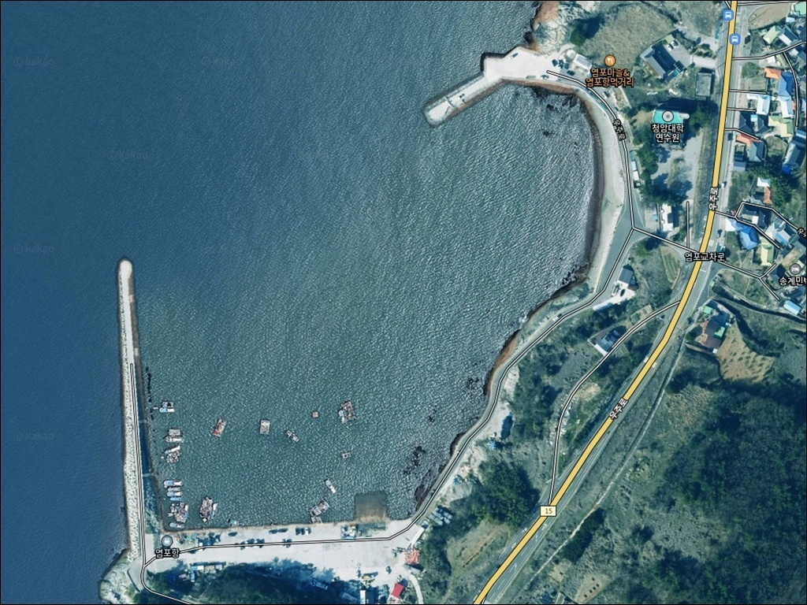
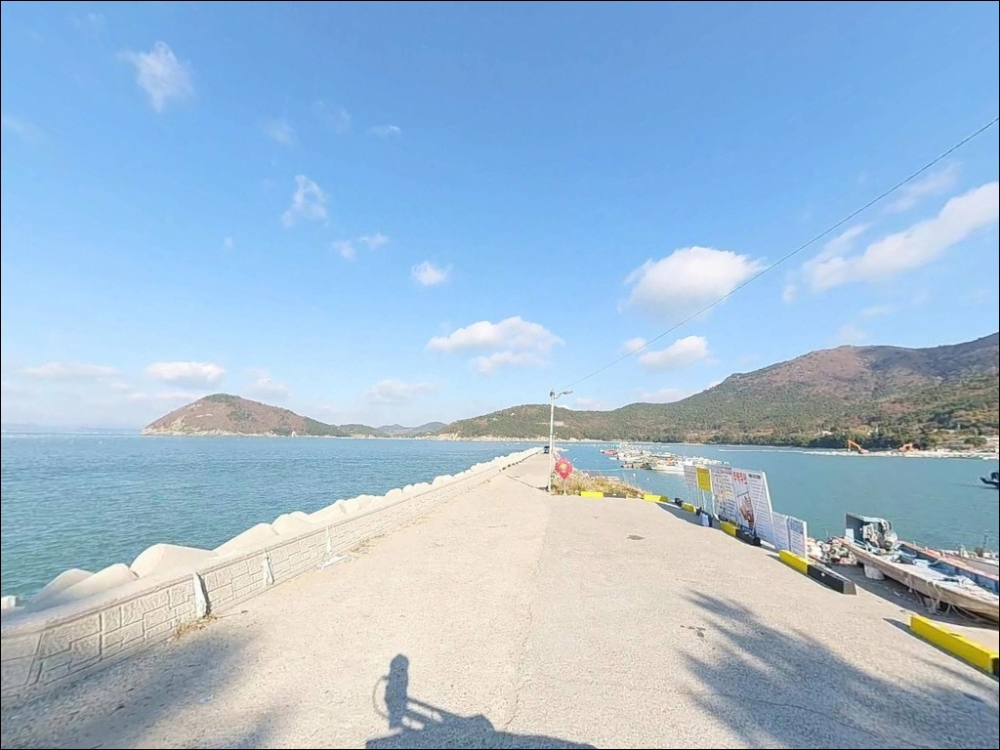
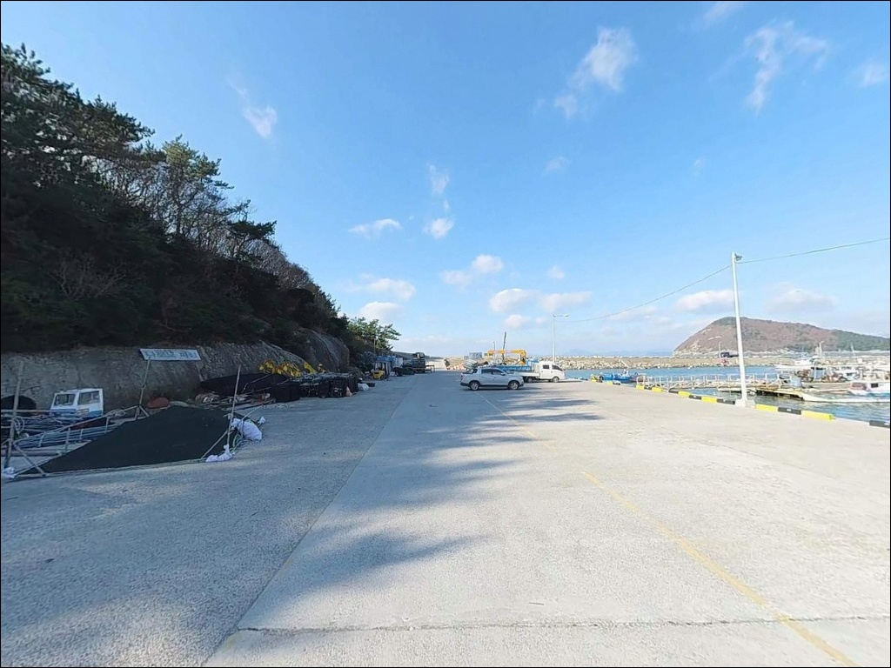
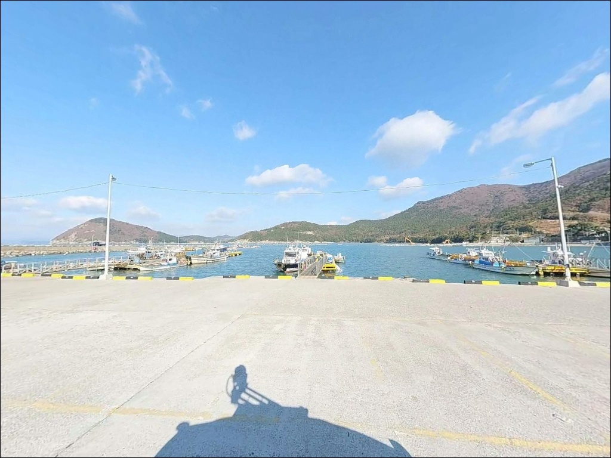
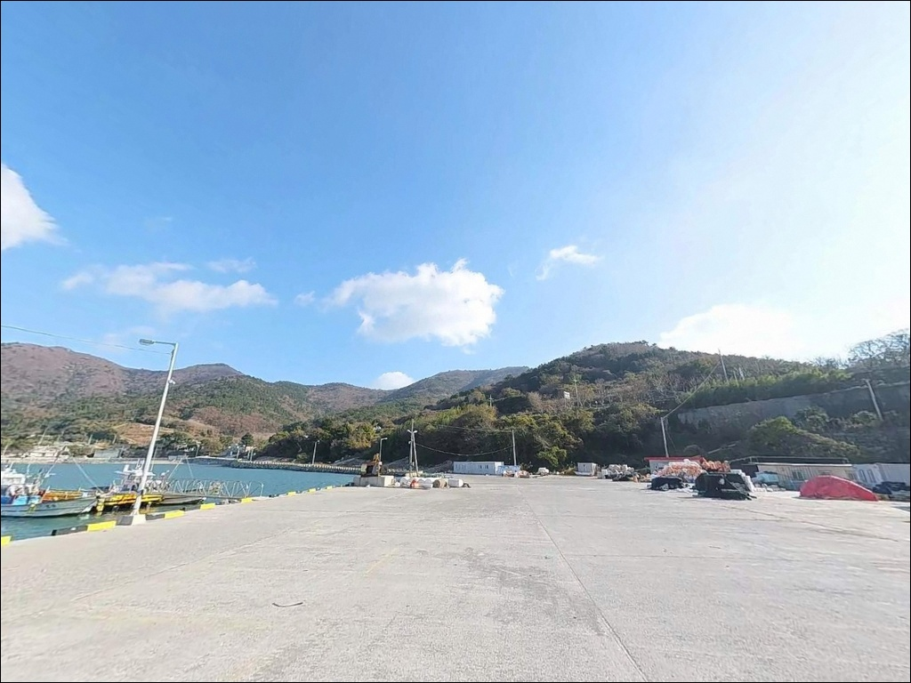
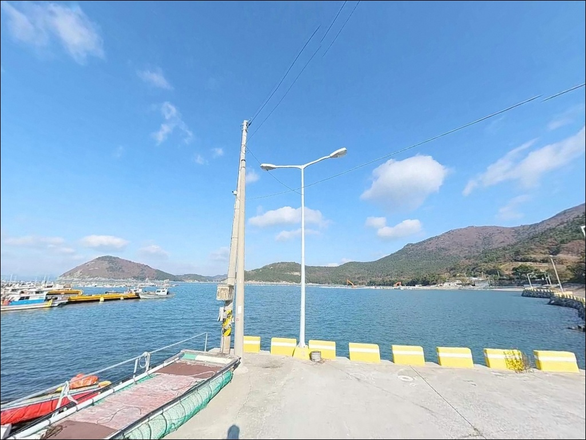
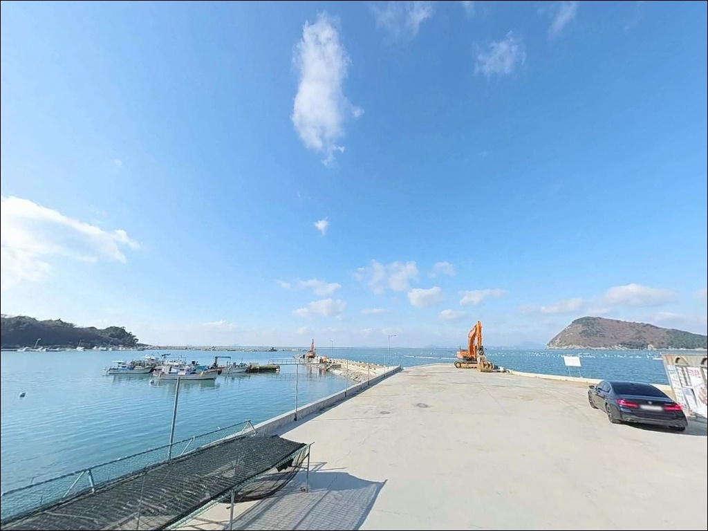
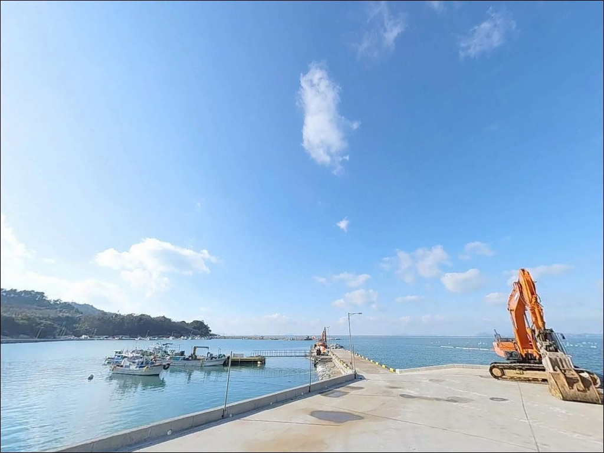
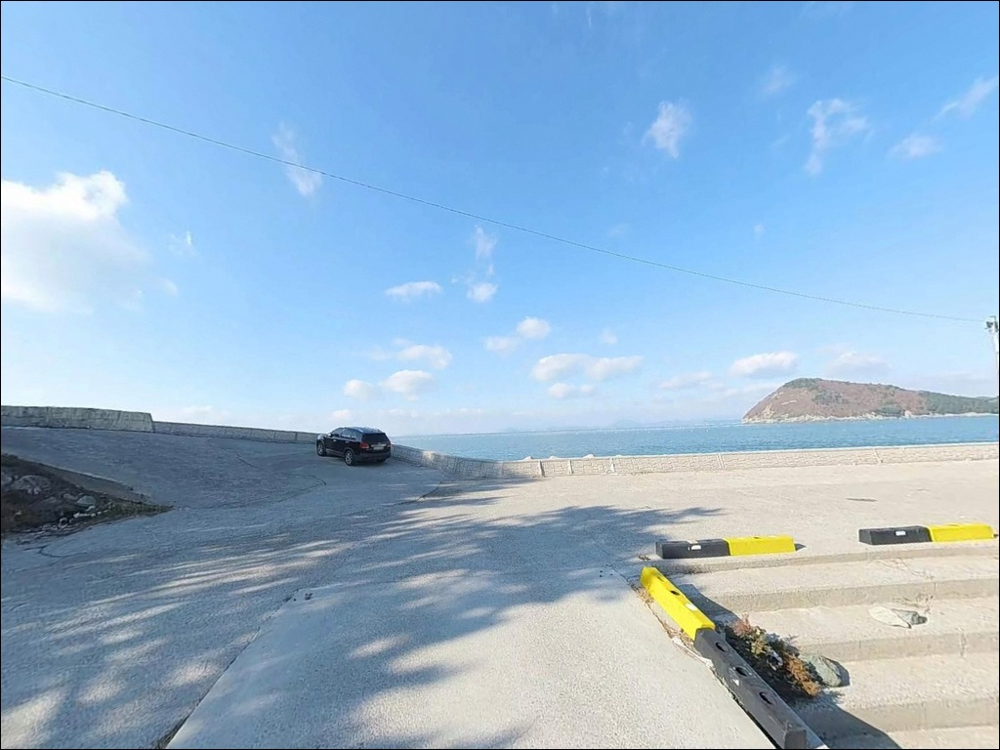

방파제 자리가 꽉 차도, 항 좌우 갯바위로 이어지는 고흥 염포항 원투낚시
이 페이지에는 광고(제휴 링크 포함)가 있으며, 광고 링크를 통해 구매하면 운영자가 판매 수익 또는 수수료를 받을 수 있습니다. 포인트 사진: 카카오맵 스카이뷰·로드뷰. 이 페이지의 지도·사진 이미지는 카카오맵의 실제 서비스 이미지와 다를 수 있습니다.


포인트 안내
염포항(중촌방파제)
전남 고흥군 봉래면 외초리 291-6
외나로도 남단에서 방파제 원투를 노리다가
자리가 꽉 찼다고 돌아오는 낚시인이 있습니다.
이 포인트는 방파제 하나만 있는 곳이 아닙니다.
항 좌우 갯바위 전 구간이
별도의 낚시터로 이어지는 구조라
방파제 자리가 없어도 돌아설 이유가 없는 곳입니다.
이 글은
염포항(중촌방파제)의
진입 동선, 차박 여건, 낚시 지형 구조,
스타일별 공략 조건에 집중합니다.
조황 단정이나 특정 어종 보장은
이 글의 범위에 포함되지 않습니다.

1. 진입 동선과 포인트 접근성
외나로도는 나로1·2대교로 육지와 연결되어
차량 진입이 가능한 섬입니다.
염포항(중촌방파제)은 나로도항(신금리)에서
외나로도 해안 도로를 따라 남쪽으로
약 7~8km 이동하면 닿는 구조입니다.
도로 종점에 가까운 위치로,
항 직전 구간은 승용차 2대 교차가 가능한 수준의
포장 도로이며 비포장 구간은 없습니다.
항 입구 평지에서 회차가 가능하고,
주차 후보지는 내항 평지가 1순위입니다.
캠핑카 2대 이상 수용 가능한 수준으로
바닥이 고르고 평탄한 편입니다.
방파제 진입 전 좌측 공터도
주차지로 활용되는 구간이며,
어선 조업 동선과 그물 건조대를 먼저 확인한 뒤
자리를 잡는 것이 기본 매너입니다.
대형 SUV나 루프탑 텐트를 올린 차량이라면
도로 폭을 감안해 항 진입 전
교행 구간을 미리 위성지도로 확인하는 편이 안전합니다.
섬 도로 특성상 교행 여유가 좁은 구간에서
맞닥뜨리면 후진 거리가 길어질 수 있습니다.

2. 차박 환경과 야간 체류 여건
내항 평지는 차박 베이스로 활용되는 구간입니다.
블로그 후기에서도 이 공간을 차박 정박지로 사용한
기록이 다수 확인되며, 바닥이 평탄해
차량 수평 유지 부담이 적은 편입니다.
민가 밀집도가 낮아 야간 소음은 거의 없고,
차량 통행도 극히 드문 조용한 환경입니다.
다만 마을 규모가 작아 가로등은 제한적입니다.
방파제 중간 이후부터는 광원이 부족하므로
야간 이동 시 개인 헤드랜턴이 필수입니다.
외해로 직접 노출된 구조라
남풍이 강한 날에는 파도와 바람 영향이 즉각 반영되며,
기상 변화 전 철수 판단을 빠르게 내리는 것이
이 포인트 체류의 기본 전제입니다.
염포항(중촌방파제) 일대는
다도해해상국립공원 구역 내에 해당합니다.
국립공원 내 지정 장소 외 야영·취사는
원칙적으로 허용되지 않습니다.
항 인근에 다도해국립공원 염포야영장(20개 사이트)이
운영 중이므로, 취사를 포함한 야박이라면
야영장을 이용하는 편이 안전합니다.


3. 주변 편의시설 및 인프라 현황
내항 주차장 구석에
신축 공용 화장실이 위치합니다.
이 시설 하나를 제외하면
반경 3km 이내 편의점·마트·식당·주유소는
없다고 보는 것이 현실적입니다.
식수·얼음·낚시 소품·연료 모두 출발 전 완비하고
이동하는 것이 기본입니다.
나로도항(신금리) 방향으로 약 1.5km 이동하면
편의점과 식당이 있습니다.
나로도항 일대가 외나로도 전체에서
생활 인프라가 집중된 유일한 거점으로,
10km권에서는 농협 하나로마트·수산시장·약국·주유소가
이 방향으로 모여 있습니다.
부족한 소품이 생기면 나로도항 방향으로 이동하는
동선이 이 포인트 운영의 기본 패턴입니다.
응급 상황 발생 시 봉래면 보건지소까지 거리가 있습니다.
비상약품·구급용품은 출발 전
차량 내에 준비하는 것이 안전합니다.

4. 진입 전 반드시 챙겨야 할 준비사항
염포항(중촌방파제)은 외해와 직접 연결된 지형입니다.
남해 풍랑 영향을 즉각 받는 구조이므로
출조 당일 기상청 파고 예보와
바다타임 물때 확인은 기본 전제입니다.
사리 전후 조류가 빠른 날에는
방파제 끝단과 갯바위 접근을
더 보수적으로 판단해야 합니다.
갯바위가 연결된 포인트 특성상
미끄럼 방지 신발과 구명조끼는 필수 장비입니다.
야간에는 개인 헤드랜턴 없이 갯바위 이동이
사실상 불가능한 환경이라
조명 장비는 여분까지 준비하는 편이 좋습니다.
외해에 노출된 특성상 너울성 파도가
갑작스럽게 들어오는 경우도 있어
갯바위 이동 시에는 2인 1조 행동을 기본으로 삼습니다.
쓰레기 수거 시설이 없는 구간이 많으므로
발생한 쓰레기는 전량 수거해 나오는 것이
이 포인트에서 지켜야 할 기본 매너입니다.
국립공원 구역 낚시 가능 여부 등
현장 규정은 출조 전
국립공원공단 고흥 다도해 구역에 확인하는 것을
권장합니다.

5. 외나로도 최남단 지형이 만드는 낚시 여건
염포항(중촌방파제)의 지형적 핵심은
방파제와 갯바위가 동시에 활용 가능하다는 점입니다.
테트라포드가 없는 석축 방파제라
발판이 평탄하고 밑걸림이 적어
원투낚시 채비를 운용하기 수월합니다.
방파제 끝단으로 갈수록 수심이 깊어지는 구조로,
끝단 외측 수심은 깊게 형성되는 편입니다.
항 좌우 해안선은 전 구간이 갯바위로 이어집니다.
외나로도 남단 특성상 남쪽으로 직접 열려 있어
외해 조류가 갯바위 구간까지 닿는 구조입니다.
밀물·썰물 물돌이 타임에
어군이 방파제 끝단과 갯바위 경계부로 모이는 패턴이
이 해역 전반에서 나타납니다.
정조 전후 타이밍을 기준으로 자리를 잡는 것이
이 포인트 공략의 기본 순서입니다.
내항은 파도 영향이 적고 잔잔한 편이라
초보자도 부담 없이 자리를 잡을 수 있는 구간입니다.
외항 방향은 조류 흐름이 더 뚜렷하게 살아 있어
원투 채비가 흘러가는 방향을
미리 확인하고 캐스팅 방향을 조정해야 합니다.
최신 조황은 출조 전에
반드시 검색해 보시기 바랍니다.


6. 포인트 지형에 맞는 낚시 스타일 제안
원투낚시는 이 포인트에서 가장 접근하기 편한 방식입니다.
테트라포드 없는 석축 방파제는
전 구간 캐스팅이 가능한 구조이며,
외항 방향으로 던지면 깊은 수심 구간을
자연스럽게 공략할 수 있습니다.
야간 원투는 내항 평지에서도 운용 가능해
차박과 낚시를 동시에 진행하기 좋은 방식입니다.
갯바위 찌낚시는 이 포인트 특성과
가장 잘 맞는 스타일 중 하나입니다.
항 좌우 갯바위 구간에서
고부력찌를 활용한 장타 운용이 가능하며,
이 해역은 감성돔이 기대해볼 수 있는
남해 외해형 구조를 갖추고 있습니다.
물돌이 타임 전후를 노리는 것이 기본 전략입니다.
에깅과 루어도 충분히 활용할 수 있습니다.
방파제 끝단과 갯바위 경계면은
갑오징어 에깅 채비가 힘을 발휘하는
지형 조건을 갖추고 있습니다.
봄·가을 시즌에 에깅 조과를
기대해볼 수 있는 해역입니다.
야간에는 내항 가로등 주변에서
소형 지그헤드로 볼락을 탐색하는
라이트게임도 어울리는 방식입니다.

7. 대안 포인트와 플랜 B 동선
염포항(중촌방파제)에서 나로도항 방향으로
약 1.5km 이동하면
나로도항 방파제가 있습니다.
대규모 항만 시설로 발판이 편안하고
가족 단위 낚시에도 적합한 구조이며,
주변 편의점·식당과 가까워
처음 나로도를 찾는 낚시인에게 기점 역할을
하는 포인트입니다.
염포항(중촌방파제)에서 약 3.9km 거리에
외초항 서쪽 방파제가 있습니다.
같은 외나로도 해역 패턴으로
원투낚시와 갯바위낚시 모두 가능하며,
염포항(중촌방파제)과 묶어서
하루 탐색 동선으로 활용하기 좋습니다.
약 4.7km 거리의 예내리 방파제도
같은 방식으로 대안 포인트로 사용할 수 있습니다.
차박 쪽에서 대안이 필요하다면
염포항(중촌방파제) 직근의
다도해국립공원 염포야영장이 1순위입니다.
예약제로 운영되며 취사장이 갖춰져 있어
취사를 포함한 숙박 계획이라면
이 야영장이 가장 안정적인 선택입니다.
성수기 전에 국립공원공단 예약 시스템에서
선점하는 것이 현실적인 준비입니다.

갯바위와 방파제를 동시에 쓸 수 있는
외나로도 남단의 조용한 출조지
방파제 원투를 즐기면서도
갯바위 찌낚시를 함께 운용하고 싶은 낚시인에게
염포항(중촌방파제)의 지형 구조는
잘 맞는 편입니다.
테트라포드 없는 석축 방파제와
항 좌우로 이어지는 갯바위가
복수의 낚시 스타일을 자연스럽게 수용합니다.
반면 반경 3km 이내 편의시설이 없고
다도해해상국립공원 구역 내 위치라
취사·야영 방식에 사전 확인이 필요합니다.
자급 준비와 국립공원 규정 확인,
기상 파고 확인, 이 세 가지를 갖추고 나서야
이 포인트가 제 역할을 합니다.
나로도 최남단에서 낚시를 마치고
조용한 외해 바람을 맞으며
차 안에서 하룻밤을 보내는 낚시 여행자라면,
국립공원 규정만 미리 확인해두면
남해 차박 낚시 출조지로 기억에 남는
포인트가 될 수 있습니다.